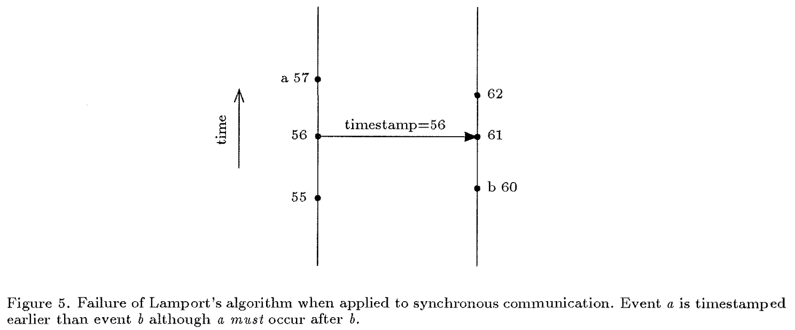
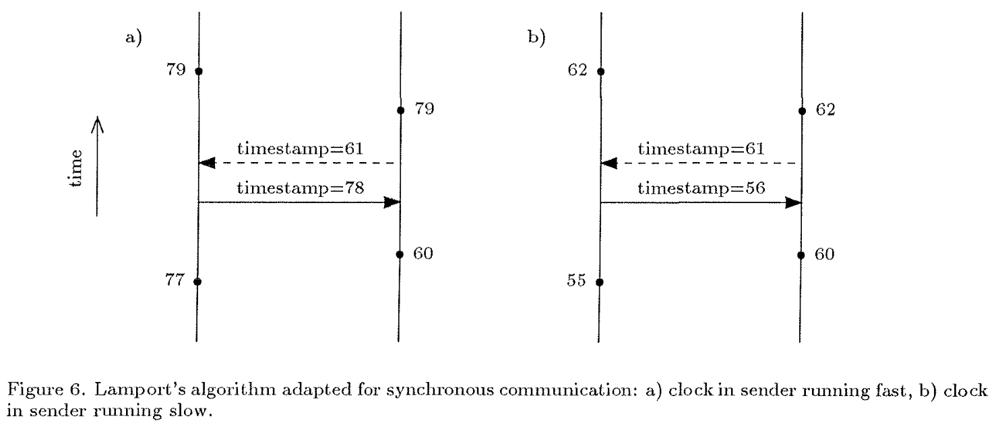

Timestamps in Message-Passing Systems That Preserve the Partial Ordering
Original paper: [1]
An example timestamping algorithm
Asynchronous Timestamping
An example algorithm rules to maintain a timestamp (Lamport Clock) for asynchronous processes:
- Initially all values are zero.
- The local clock value is incremented at least once before each atomic event.
- The current value of the entire timestamp array is piggybacked on every outgoing signal.
Upon receiving a signal, a process sets the value of each entry in the timestamp array to be the maximum of the two corresponding values in the local array, and in the piggybacked array received. The value corresponding to the sender, however, is a special case and is set to be one greater than the value received (to allow for transit time), but only if the local value is not already greater than that received (to allow for signal "overtaking" as described below), i.e.,
q?otherarray; * receive timestamp array from process q * if localarray[q] ≤ otherarray[q] then localarray[q] := 1 + otherarray[q]; for i := 1 to n do localarray[i] := max(localarray[i], otherarray[i]);
- Values in the timestamp arrays are never decremented.
Synchronous Timestamping
The asynchronous timestamping does not work for the synchronous case.

Figure 1: An example where Lamport Clock (the asynchronous timestamping algorithm) fails for the synchronous case. Technically event a occurred before b, but it looks like b occurred before a.
So the solution is to add a bidirectional timestamp exchange.

Figure 2: The synchronous timestamping algorithm.
An example algorithm rules to maintain a timestamp for synchronous processes:
- Initially all values are zero.
- The local clock value is incremented at least once before each atomic event.
During a communication event, the two processes involved exchange timestamp arrays and each element in the local array is set to be the maximum of its old value and the corresponding value in the array received, i.e.,
q?otherarray; for i := 1 to n do localarray[i] := max(localarray[i], otherarray[i]);
- Values in the timestamp arrays are never decremented.
This algorithm does not tolerate faults. For every sent message, the process expects a response containing the receiver's timestamp.
Allowing nodes to be dynamic
It is easy to extend these algorithms to the case where the number of processes are dynamic. As long as all the nodes have a unique identifier, just extend the timestamp array on discovering new identifiers. A process uses zero if it does not have any timestamp for an identifier.
Applications
- Implement a \(\rightarrow\) relation among events in a distributed system
- This paper talks about an application where users send requests to access data in a distributed database by providing ranges of timestamps. If the servers cross the timestamp in the request the server considers the request as timed out.
Notes
- This is one of the two papers that invented vector clocks.